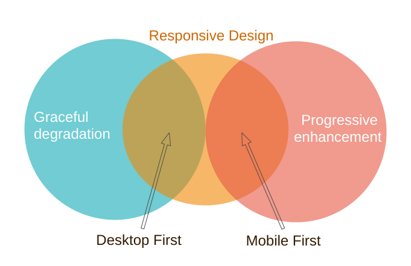
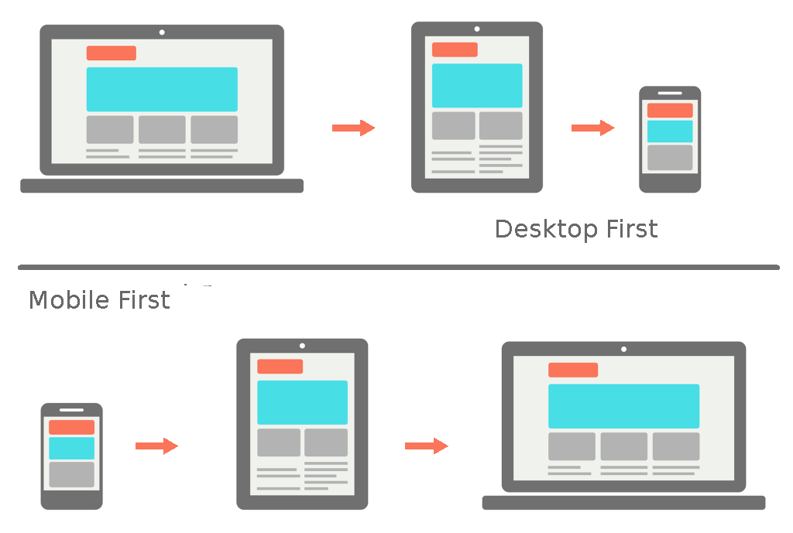

Responsive Web design essential concepts
Created for
Created by

Modern design strategies
Design strategies
Clear the concepts
{kind=link}
Progressive enhancement
Progressive enhancement is a design philosophy that centers around providing a baseline of essential content and functionality to as many users as possible, while at the same time going further and delivering the best possible experience only to users of the most modern browsers that can run all the required code.Progressive_Enhancement @MDN
Graceful degradation
Graceful degradation is a design philosophy that centers around trying to build a modern web site/application that will work in the newest browsers, but fall back to an experience that while not as good still delivers essential content and functionality in older browsers.Graceful_degradation @MDN
Mobile First
- Start prototyping your site for the smallest screen first and add features for larger displays
- Mobile first == Content first (Extras later)
Desktop First
- Start prototyping for desktop first and then work your way down to tablet/mobile devices.
Mobile First vs. Desktop First
{kind=link}
Essential Concepts
Essential Concepts
RWDResponsiveWebDesign
- The Viewport
- Media Queries
- Responsive Units
- Adaptive Images
- Grid and Flexboxes
CSS media queries
CSS media queries
Overview
- From CSS2 are supported media-dependent style sheets tailored for different media types
- I.e. we can define one style when the document is rendered on screen, and another stylesheet, when the document is printed.
- Media queries extend the functionality of media types by allowing more precise labeling of style sheets.
- By using media queries, presentations can be tailored to a specific range of output devices without changing the content itself.
Example
Simple page with screen and print stylesUsage
- To conditionally apply styles with the CSS @media and @import at-rules.
- To target specific media for the <link>, <source>, and other HTML elements.
- I.e. if you provide a media type or query inside the link media attribute, then the resource will only be loaded if the media condition is true.
- To test and monitor media states using JavaScript methods
- We can use MediaQueryList or similar method, to check if the device is in landscape or portrait orientation.
Syntax
@media [media_type and] [(media_feature_expr)*]{
@media (min-width: 600px){}
@media (min-width: 600px) and (max-width: 1000px ){}
@media print and (min-width: 600px){}
@media print and (orientation: landscape){}
@media print and (min-width:800px), print and (orientation: landscape){}
Syntax
@media [media_type and] [(media_feature_expr)*]{
- A media query is composed of an optional media type and any number of media feature expressions
- media type: describe the general category of a device, like print, screen, speech
- Media features: describe specific characteristics of the user agent, output device, or environment. Like width, orientation, resolution, etc.
- Media feature expressions test for their presence or value, and are entirely optional.
- Each media feature expression must be surrounded by parentheses.
- Media queries are case-insensitive.
Example
box 1
box 2
box 3
.box {
width: 370px;
float: none;
border: 1px solid red;
box-sizing: border-box;
}
@media (min-width: 375px) and (max-width: 812px) {
.box {
width: 33%;
float: left;
background: blue;
}
}
@media (min-width: 812px) {
.box {
width: 30%;
float: left;
}
}
Media features
- Media features describe specific characteristics of the user agent, output device, or environment.
- Media feature expressions test for their presence or value, and are entirely optional.
- Each media feature expression must be surrounded by parentheses.
@media (max-width: 600px){}
@media (hover: none){}
@media (orientation: portrait){}
@media (display-mode: fullscreen){}
Media types
- Media types describe the general category of a device.
- Except when using the
notoronlylogical operators, the media type is optional and defaults toall.
@media screen and (max-width: 600px){}
Complex media queries with logical operators
- The logical operators
not,and, andonlycan be used to compose a complex media query. - With
,(comma) we can combine multiple media queries into one. If any of them istruethen the entire media rule is considered as True. I.e. comma operator behives like logical OR.
@media (min-width: 375px) and (max-width: 812px){}
@media only screen and (min-width: 375px){}
Media Queries with Sass
Media Queries with Sass
Overview
- We can set our media queries into Sass variable and interpolate it on the desired place.
$iPhoneX: "(min-width: 375px) and (max-width: 812px)";
$desktop: "(min-width: 812px)";
.box{
width: 370px;
float: none;
border: 1px solid red;
box-sizing: border-box;
}
@media #{$iPhoneX}{
.box{
width: 33%;
float: left;
background: blue;
}
};
@media #{$desktop}{
.box{
width: 30%;
float: left;
}
}
Media query bubbling
- Other cool feature with Sass is "Media query bubbling": if a media query is nested inside a selector Sass will lift (bubble) this query out and will nest the selector rule.
$iPhoneX: "(min-width: 375px) and (max-width: 812px)";
$desktop: "(min-width: 812px)";
.box{
width: 370px;
float: none;
border: 1px solid red;
box-sizing: border-box;
@media #{$iPhoneX}{
width: 33%;
float: left;
background: blue;
};
@media #{$desktop}{
width: 30%;
float: left;
}
}
Manage the viewport for mobile design.
Manage the viewport for mobile design.
CSS pixels and device pixels
- Hardware pixel - an individual dot of light in the display
- CSS pixel - a CSS measurement unit
- device pixel ratio - how many hardware pixels equals one software pixel
- For instance, on a device with dpr=2, a font size of 14px will take up 14 CSS pixels but render at 28 hardware pixels.
- Reading: A pixel is not a pixel
Or "Hardware pixels" and "Software pixels"
Hi-DPI
- Mobile devices reach more and more high dpi
- pixensity.com
{kind=link}
The problem
- Browsers on mobile devices render pages in a viewport, which is usually wider than the screen, and then shrink the rendered result down so it can all be seen at once.
- That is good for pages, which are not mobile-optimized, but it's not good for optimized pages (using @media queries)
- Check why the media query does not fire: viewport.html
- Reference: A tale of two viewports — part two @quirksmode.org
viewport meta tag
- Let web developers control the viewport's size and scale
- Introduced by Apple for Safari iOS, but respected by most mobile browsers
- Is not part of any web standard
- No consistent documentation
- Reference:
- Configuring the Viewport @Safari Web Content Guide
Syntax
- Cheatsheet: Understanding viewport: examples
Task
Task
Mobile First Navigation Menu
{kind=link}
{kind=link}
These slides are based on
customised version of
framework